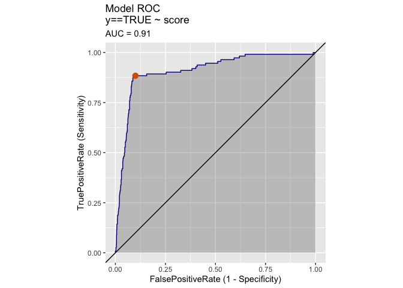
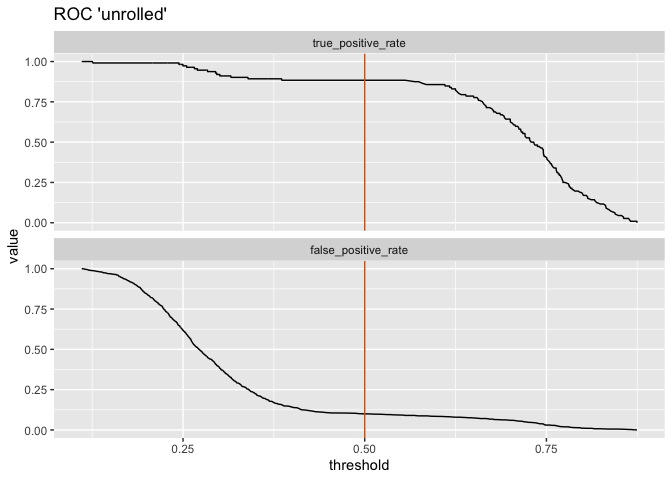
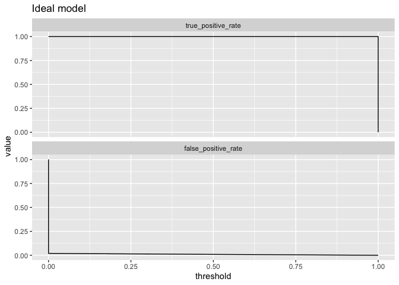
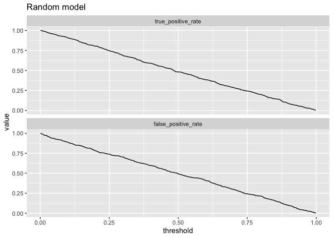
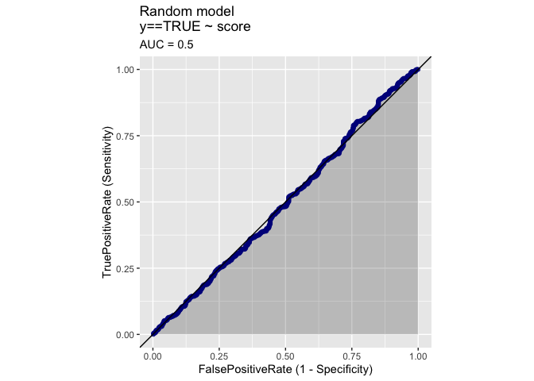
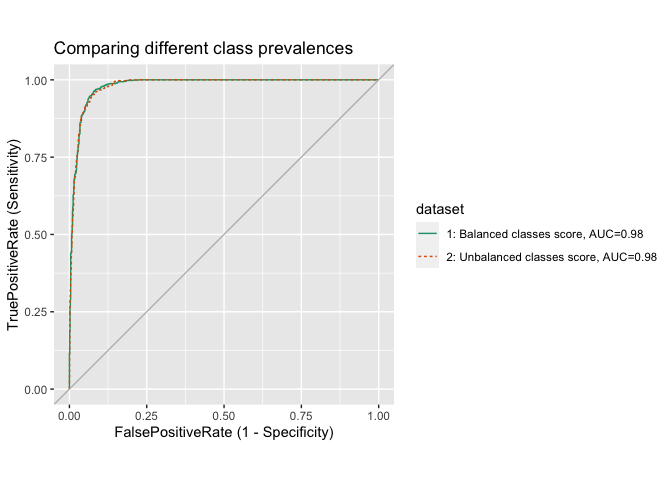

Nina Zumel
In our data science teaching, we present the ROC plot (and the area under the curve of the plot, or AUC) as a useful tool for evaluating scoring classifier models, and for comparing multiple such models. The ROC is informative and useful, but it’s also perhaps overly concise for a beginner. This leads to a lot of questions from the students: what does the ROC tell us about a model? Why is a bigger AUC better? What does it all mean?
We'll start with a simple synthetic example, where rscore is the score produced by a trained model, and y is the actual outcome in the evaluation data set (TRUE or FALSE). We'll assume for this discussion that the model score is a number in the unit interval, as would be true for a probability model.
set.seed(1452225)
# sigmoid maps the real line to the unit interval
sigmoid = function(x) {
1/(1 + exp(-x))
}
# data with two different regimes of behavior
d <- rbind(
data.frame(
score = sigmoid(0.4*(rnorm(1000) - 2.5) ),
y = sample(c(TRUE, FALSE), prob = c(0.02, 0.98),
size = 1000, replace = TRUE)),
data.frame(
score = sigmoid( 0.4*(rnorm(200) + 2.5) ),
y = sample(c(TRUE, FALSE), size = 200, replace = TRUE))
)Here's the ROC, and its associated AUC:

Every point of the ROC corresponds to a given threshold; datums that score at least the threshold value are classified as positive (or TRUE, in this case), and datums that score below the threshold are classified as negative, or FALSE. So the ROC represents the false positive and true positive rates of all possible classification rules that can be defined from this model by varying the threshold. I've marked the point that corresponds to the threshold 0.5, which is the most commonly used threshold.
To make the information in the ROC more explicit, let's plot the true positive rates and false positive rates off all possible classification rules as a function of threshold. We can do this with the ThresholdPlot() function from the WVPlots package.
ThresholdPlot(d, "score", "y", title="ROC 'unrolled'",
truth_target = TRUE,
metrics = c("true_positive_rate", "false_positive_rate")) +
geom_vline(xintercept = 0.5, color = "#d95f02")
I've added a horizontal line at threshold = 0.5.
The threshold plot and the ROC give us the exact same tradeoff information, but the threshold plot makes the relationship of performance to threshold value explicit This can be useful if you are willing to tweak the threshold to make a tradeoff. For example, if avoiding false positives is more important to you than catching all the positive instances, you could try a stricter threshold like 0.75. In this case, the classifier would make fewer false positive errors, but it would also detect far fewer positive examples, as well. On the other hand, the ROC (and the AUC) are more convenient for comparing multiple scoring models.
The threshold plot can also give us further intuition about the ROC. We can see that as the threshold goes to zero, both the true and false positive rates go to one (the upper right hand corner of the ROC). As the threshold goes to one, both the rates go to zero (the lower left hand corner of the ROC). As the threshold increases from zero to one, it traces out the rest of the ROC from upper right to bottom left, representing all the tradeoffs between true positive rate and false positive rate that are possible with a given model.
The Ideal Model
The ideal model would predict every instance perfectly; positives would score one, negatives would score zero. Let's see what that would look like.
ideal <- data.frame(score = c(rep(1, 50), rep(0, 50)),
y = c(rep(TRUE, 50), rep(FALSE, 50)) )
ThresholdPlot(ideal, "score", "y", title="Ideal model",
truth_target = TRUE,
metrics = c("true_positive_rate", "false_positive_rate")) 
(The endpoints are convention). With an ideal model, any threshold (except exactly zero or one) produces a classification rule with a true positive rate of one and and a false positive rate of zero. This traces out an ROC that's exactly the unit square:
So now we know the ideal model has an AUC of 1. We want our actual model to trace out a curve as close to the ideal model as possible; such a model should have an AUC close to 1.
The Random Model
What about a model that doesn't predict anything at all, but just returns random answers?
random <- data.frame(score = runif(1000),
y = c(rep(TRUE, 500), rep(FALSE, 500)) )
ThresholdPlot(random, "score", "y", title="Random model",
truth_target = TRUE,
metrics = c("true_positive_rate", "false_positive_rate")) 
Both the true and false positive rates are proportional to the threshold, and the ROC will be close to the line x = y.

A random model has an AUC near 0.5. And a model that has an ROC that dips below the line x = y (and has an AUC less than 0.5) is actually anticorrelated with the true class labels.
It's worth noting that the ROC depends on the false positive rate (the rate at which negatives are misclassified as positives) and true positive rate (the rate at which positives are correctly classified), neither of which depends on class prevalence. That means that the ROC is independent of class prevalence. In other words, it can look overly optimistic when the target class is rare.
To demonstrate, let's look at two situations that have been designed to generate the same ROC (for the code to generate this example, see the R markdown for this article). The first situation is a model applied to a balanced-class population; the second is a model applied where the positive class is relatively rare (about 20%).
##
## FALSE TRUE
## 1000 1000##
## FALSE TRUE
## 1600 400ROCPlotPair2(nm1 = "Balanced classes", # model 1
frame1 = balanced,
xvar1 = "score", truthVar1 = "y", truthTarget1 = TRUE,
nm2 ="Unbalanced classes", # model 2
frame2 = unbalanced,
xvar2 = "score", truthVar2 = "y", truthTarget2 = TRUE,
title = "Comparing different class prevalences",
estimate_sig = FALSE)
As designed, the ROC is nearly identical in both situations, with a high AUC. These both look like good models.
But suppose instead of false positive rate, you are worried about precision (the probability that a instance predicted to be positive is actually positive). With respect to precision, the two models behave quite differently.

Both models have identical recall (which is the same as true positive rate, and is independent of class prevalence), but the model that is applied to a population where the positive class is rare will have much lower precision for any useful setting of the classifier threshold.
Incidentally, this is why when evaluating what a positive result of a medical screening test means, it's important to know the prevalence of the disease (or other medical condition) in the population. Medical screening tests are generally designed to meet certain levels of sensitivity (true positive rate) and specificity (1 - false positive rate); these measures are independent of the disease prevalence.
Suppose that the example in the graph above showed a screening test applied to two different populations. We want to make sure that we identify everyone who has the disease, so we set the threshold at 0.4 (the vertical line on the graph), so the recall is close to one. If 50% of the population has the disease, then 8 out of 10 people who test positive will actually be positive. But if only 20% of the population has the disease, then nearly half the people who test positive are actually negative.
These sort of details are easier to work through with tools that expose tradeoff management, like ThresholdPlot, rather than only examining the ROC.
What have we established in this article?
The ROC and AUC are useful for quickly comparing multiple models. In a comparison, higher AUCs generally mean better models.
Something like WVPlots::ThresholdPlot can be useful for setting appropriate classifier thresholds. For an extended example of ThresholdPlot, see here.
An AUC close to one is good; an AUC close to 0.5 means the model doesn't perform much better than random.
True and false positive rates, and therefore the ROC, are independent of class prevalence. Precision is dependent on class prevalence.
If your preferred performance metric is dependent on class prevalence, like precision or accuracy, then the ROC may be optimistic when the positive class is rare. ThresholdPlot can also be useful for evaluating a model in this situation.
Hopefully, you now have a better intuition about the ROC, and what it means.